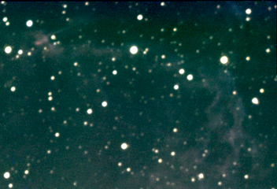
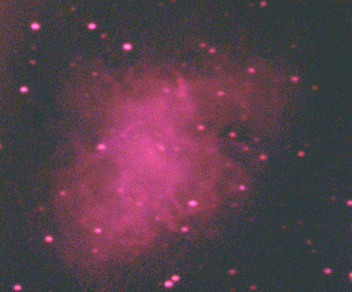
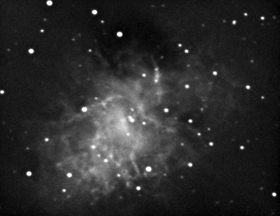

Super Nova Remnants
These are images of supernova remnants.
|  |  |
| NGC6995 The Network Nebula, Part of the Veil Nebula
3xLRGB, 10 min exps., Meade DSI ProII Meade 10" LX200 |
Part of the Veil Nebula
Six b&w exposures, Meade DSI ProII Celestron 80mm refractor, guided on a Meade 12" LX200 |
|  |  |
| M1 The Crab Nebula
Taken by Flora with the help of Paul 10xLRGB, 30 sec. exps., Meade DSI ProII Meade 10" LX200 |
M1 The Crab Nebula
40 images x 30 sec. Meade DSI ProII Meade 14" LX200GPS, Processed in Maxim DL Taken 2/4/09 |